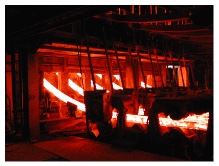
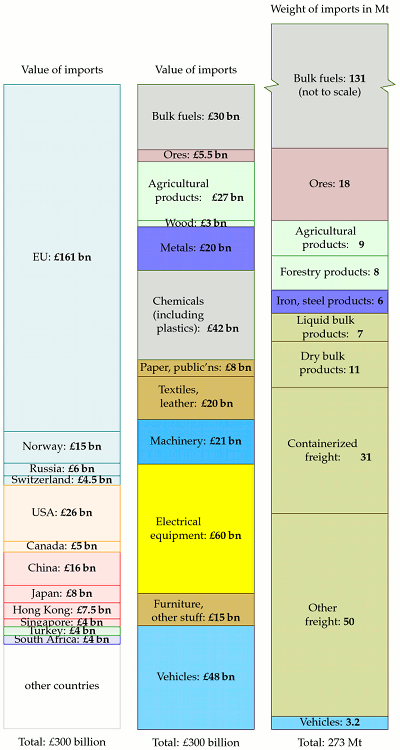
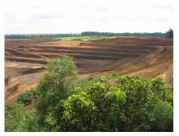
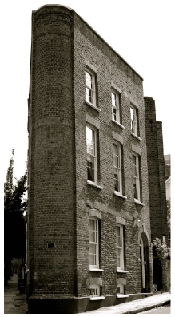
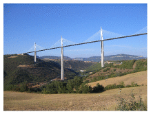

H Stuff II
Imported energy

Figure H.1. Continuous casting of steel strands at Korea Iron and Steel Company.
Dieter Helm and his colleagues estimated the footprint of each pound’s worth of imports from country X using the average carbon intensity of country X’s economy (that is, the ratio of their carbon emissions to their gross domestic product). They concluded that the embodied carbon in imports to Britain (which should arguably be added to Britain’s official carbon footprint of 11 tons CO2e per year per person) is roughly 16 tons CO2e per year per person. A subsequent, more detailed study commissioned by DEFRA estimated that the embodied carbon in imports is smaller, but still very significant: about 6.2 tons CO2e per year per person. 1 In energy terms, 6 tons CO2e per year is something like 60 kWh/d.
Here, let’s see if we can reproduce these conclusions in a different way, using the weights of the imports.
Figure H.2 shows Britain’s imports in the year 2006 in three ways: on the left, the total value of the imports is broken down by the country of origin. In the middle, the same total financial value is broken down by the type of stuff imported, using the categories of HM Revenue and Customs. On the right, all maritime imports to Britain are shown by weight and broken down by the categories used by the Department for Transport, which doesn’t care whether something is leather or tobacco – it keeps track of how heavy stuff is, whether it is dry or liquid, and whether the stuff arrived in a container or a lorry.

Figure H.2. Imports of stuff to the UK, 2006.
The energy cost of the imported fuels (top right) is included in the standard accounts of British energy consumption; the energy costs of all the other imports are not. For most materials, the embodied energy per unit weight is greater than or equal to 10 kWh per kg – the same as the energy per unit weight of fossil fuels. This is true of all metals and alloys, all polymers and composites, most paper products, and many ceramics, for example. The exceptions are raw materials like ores; porous ceramics such as concrete, brick, and porcelain, whose energy cost is 10 times lower; wood and some rubbers; and glasses, whose energy cost is a whisker lower than 10 kWh per kg. [r22oz]
We can thus roughly estimate the energy footprint of our imports simply from the weight of their manufactured materials, if we exclude things like ores and wood. Given the crudity of the data with which we are working, we will surely slip up and inadvertently include some things made of wood and glass, but hopefully such slips will be balanced by our underestimation of the energy content of most of the metals and plastics and more complex goods, many of which have an embodied energy of not 10 but 30 kWh per kg, or even more.

Figure H.3. Niobium open cast mine, Brazil.
For this calculation I’ll take from the right-hand column in figure H.2 the iron and steel products, the dry bulk products, the containerized freight and the “other freight,” which total 98million tons per year. I’m leaving the vehicles to one side for a moment. I subtract from this an estimated 25 million tons of food which is presumably lurking in the “other freight” category (34 million tons of food were imported in 2006), leaving 73 million tons.
Converting 73 million tons to energy using the exchange rate suggested above, and sharing between 60 million people, we estimate that those imports have an embodied energy of 33 kWh/d per person.
For the cars, we can hand-wave a little less, because we know a little more: the number of imported vehicles in 2006 was 2.4 million. If we take the embodied energy per car to be 76 000 kWh (a number we picked up in chapter 15) then these imported cars have an embodied energy of 8 kWh/d per person.

I left the “liquid bulk products” out of these estimates because I am not sure what sort of products they are. If they are actually liquid chemicals then their contribution might be significant.
We’ve arrived at a total estimate of 41 kWh/d per person for the embodied energy of imports – definitely in the same ballpark as the estimate of Dieter Helm and his colleagues.
I suspect that 41 kWh/d per person may be an underestimate because the energy intensity we assumed (10 kWh per kg) is too low for most forms of manufactured goods such as machinery or electrical equipment. However, without knowing the weights of all the import categories, this is the best estimate I can make for now.
Lifecycle analysis for buildings
Tables H.4 and H.5 show estimates of the Process Energy Requirement of building materials and building constructions. This includes the energy used in transporting the raw materials to the factory but not energy used to transport the final product to the building site.
| Material | Embodied energy (MJ/kg) | (kWh/kg) |
|---|---|---|
| kiln-dried sawn softwood | 3.4 | 0.94 |
| kiln-dried sawn hardwood | 2.0 | 0.56 |
| air dried sawn hardwood | 0.5 | 0.14 |
| hardboard | 24.2 | 6.7 |
| particleboard | 8.0 | 2.2 |
| MDF | 11.3 | 3.1 |
| plywood | 10.4 | 2.9 |
| glue-laminated timber | 11 | 3.0 |
| laminated veneer lumber | 11 | 3.0 |
| straw | 0.24 | 0.07 |
| stabilised earth | 0.7 | 0.19 |
| imported dimension granite | 13.9 | 3.9 |
| local dimension granite | 5.9 | 1.6 |
| gypsum plaster | 2.9 | 0.8 |
| plasterboard | 4.4 | 1.2 |
| fibre cement | 4.8 | 1.3 |
| cement | 5.6 | 1.6 |
| in situ concrete | 1.9 | 0.53 |
| precast steam-cured concrete | 2.0 | 0.56 |
| precast tilt-up concrete | 1.9 | 0.53 |
| clay bricks | 2.5 | 0.69 |
| concrete blocks | 1.5 | 0.42 |
| autoclaved aerated concrete | 3.6 | 1.0 |
| plastics – general | 90 | 25 |
| PVC | 80 | 22 |
| synthetic rubber | 110 | 30 |
| acrylic paint | 61.5 | 17 |
| glass | 12.7 | 3.5 |
| fibreglass (glasswool) | 28 | 7.8 |
| aluminium | 170 | 47 |
| copper | 100 | 28 |
| galvanised steel | 38 | 10.6 |
| stainless steel | 51.5 | 14.3 |
Table H.4. Embodied energy of building materials (assuming virgin rather than recycled product is used). (Dimension stone is natural stone or rock that has been selected and trimmed to specific sizes or shapes.) Sources: [3kmcks], Lawson (1996).
Embodied energy (kWh/m2)
Walls
timber frame, timber weatherboard, plasterboard lining
52
timber frame, clay brick veneer, plasterboard lining
156
timber frame, aluminium weatherboard, plasterboard lining
112
steel frame, clay brick veneer, plasterboard lining
168
double clay brick, plasterboard lined
252
cement stabilised rammed earth
104
Floors
elevated timber floor
81
110 mm concrete slab on ground
179
200 mm precast concrete T beam/infill
179
Roofs
timber frame, concrete tile, plasterboard ceiling
70
timber frame, terracotta tile, plasterboard ceiling
75
timber frame, steel sheet, plasterboard ceiling
92
Table H.5. Embodied energy in various walls, floors, and roofs. Sources: [3kmcks], Lawson (1996).
Table H.6 uses these numbers to estimate the process energy formaking a three-bedroom house. The gross energy requirement widens the boundary, including the embodied energy of urban infrastructure, for example, the embodied energy of the machinery that makes the raw materials. A rough rule of thumb to get the gross energy requirement of a building is to double the process energy requirement [3kmcks].
Area (m2)
×
energy density (kWh/m2)
energy (kWh)
Floors
100
×
81
=
8100
Roof
75
×
75
=
5600
External walls
75
×
252
=
19 000
Internal walls
75
×
125
=
9400
Total
42 000
Table H.6. Process energy for making a three-bedroom house.
If we share 42 000 kWh over 100 years, and double it to estimate the gross energy cost, the total embodied energy of a house comes to about 2.3 kWh/d. This is the energy cost of the shell of the house only – the bricks, tiles, roof beams.

Figure H.7. Millau Viaduct in France, the highest bridge in the world. Steel and concrete, 2.5 km long and 353 m high.
The imports got counted
A section added in the 2026 revision. This chapter does something unusual for its date: it estimates the energy embodied in Britain’s imports — arriving at about 41 kWh per day per person — and observes that none of it appears in the national accounts. MacKay is careful to call the estimate hand-waving.
The hand-waving is no longer necessary, and the result held up. Consumption-based accounting is now official statistics: Britain publishes a carbon footprint that reallocates emissions to where goods are consumed rather than where they are made, and the gap between the two measures is exactly the quantity this chapter was groping for. Chapter 15 uses it to separate the three mechanisms behind Britain’s falling energy use — genuine efficiency, cleaner electricity, and production moving abroad — and finds that the third is real and substantial though not dominant.
Which vindicates the chapter’s method and complicates its conclusion. MacKay’s instinct, that a tight boundary around Britain flatters Britain, was right. But the correction is smaller than the raw import figure suggests, because a consumption-based account also credits Britain with the emissions embodied in what it exports, and because the carbon intensity of the countries Britain imports from has itself been falling. Chapter 18 makes the same point from the efficiency side using ODEX: a 16% efficiency improvement does not produce a 39% fall in energy use, and the residual is not all offshoring either.
And there is a new item this chapter could not have. The embodied energy of a battery is now a live question, because chapter 20’s electric car carries several hundred kilograms of it. Chapter 15’s revision records the current position: almost all of the difference between an electric car’s embodied energy and a conventional one’s is the battery, and about half of a battery’s manufacturing emissions are the electricity used to make it — so the deficit shrinks as the grid that builds the cells gets cleaner. That is the same calculation this chapter performs for a conventional vehicle, done for a new component, and it comes out favourably. It is nonetheless the calculation that most deserves to be redone as the numbers move, because it is the one most often asserted without arithmetic in either direction.
The chapter’s real contribution survives all of this intact. A national energy account that stops at the border is measuring the country, not the consumption, and MacKay noticed that a decade before the statistics did.
Notes and further reading
Further resources: www.greenbooklive.com has life cycle assessments of building products. Some helpful cautions about life-cycle analysis: www.gdrc.org/uem/lca/life-cycle.html. More links: www.epa.gov/ord/NRMRL/lcaccess/resources.htm.
A subsequent more-detailed study commissioned by DEFRA estimated that the embodied carbon in imports is about 6.2 tons CO2e per person. Wiedmann et al. (2008).↩︎